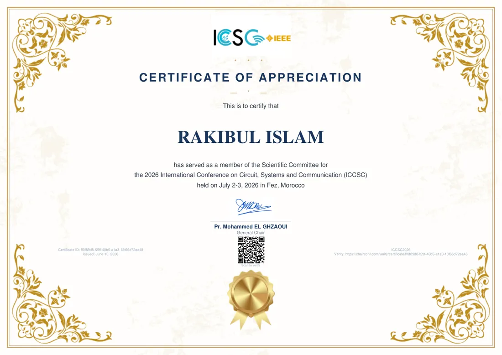
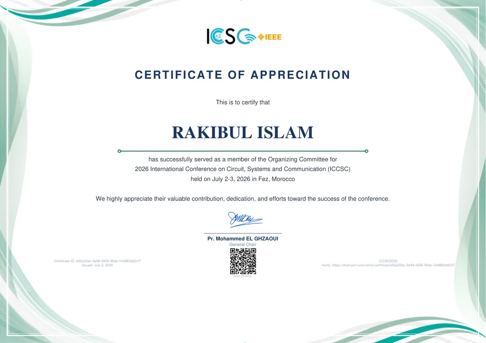
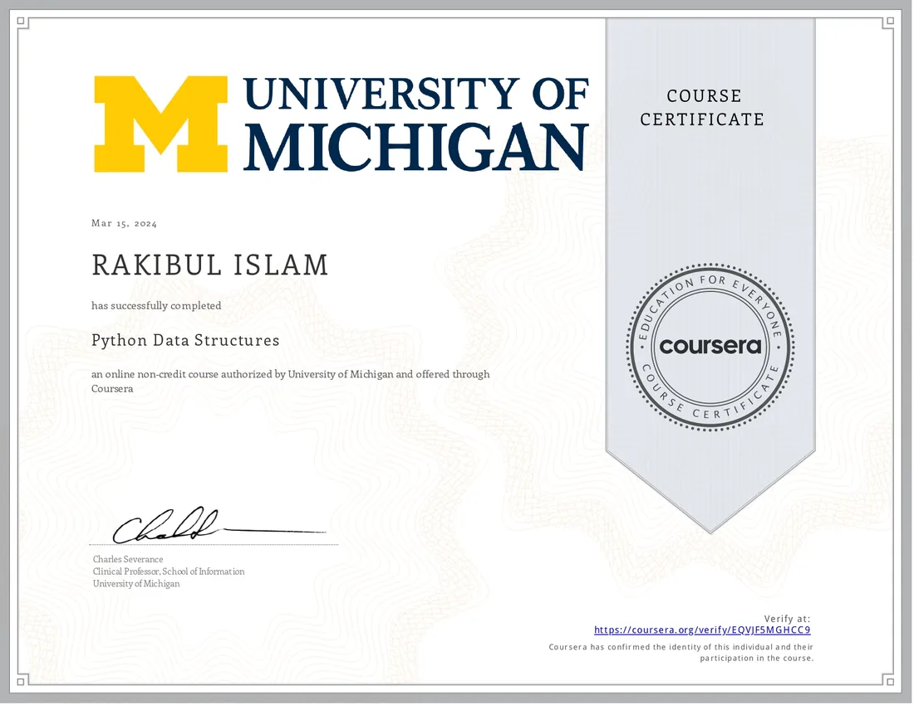
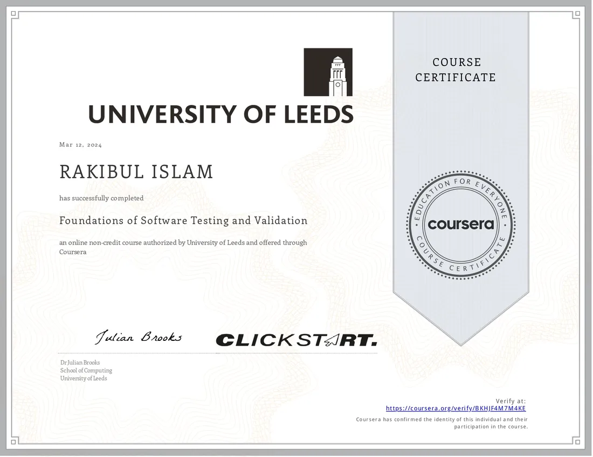
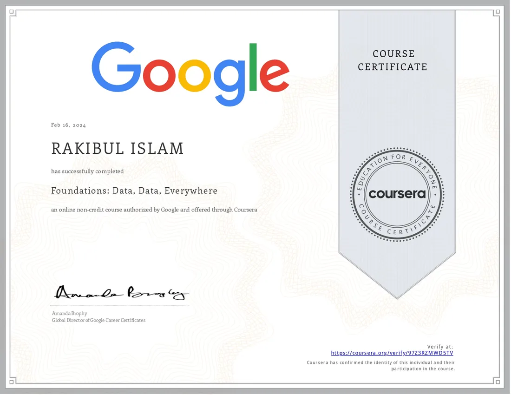
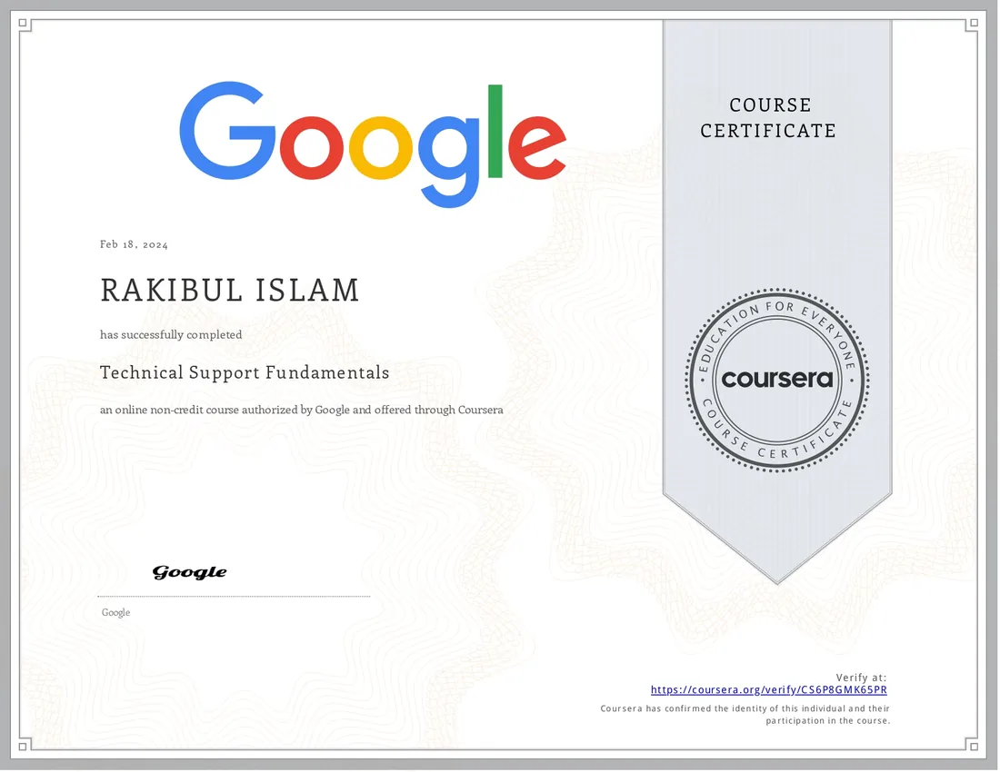

01
Operations
Workflow coordination, documentation, reporting, process improvement and day-to-day execution.
I’m Rakibul Islam. I turn messy workflows, digital channels and technical systems into structured operations that are easier to manage, measure and scale.
01 · Working model
I work where business execution, digital performance and software systems overlap — so decisions are not separated from the tools and data that support them.
Workflow coordination, documentation, reporting, process improvement and day-to-day execution.
SEO, paid campaigns, lead flows, landing pages, performance tracking and digital visibility.
Business systems, Laravel/PHP applications, databases, IT support and practical automation.
02 · Selected work
Operational systems, growth builds and technical experiments — organized by what they solve.
A working operational layer connecting patients, scheduling, billing, stock, reporting and access control in one system.
Billing, inventory and showroom reporting workflows connected to day-to-day sales operations.
Responsive B2B website focused on services, credibility, discoverability and lead capture.
E-commerce foundation with maintainable catalog and admin workflows designed for future scale.
Inventory, sales and customer workflows organized into an admin-friendly business system.
Topology design, routing, switching, IP/DNS configuration and troubleshooting practice.
03 · Experience
Each role added another layer: first understanding systems, then building them, then operating them around real business needs.
IT MANAGER · BUSINESS OPERATIONS & DIGITAL GROWTH
I work across the operating layer of the clinic—connecting internal systems, reporting, patient workflows, digital acquisition and everyday technology execution.
Process coordination, reporting structure, internal documentation and operational visibility.
SEO, paid media, lead journeys, campaign execution and performance measurement.
Clinic software, workflow logic, integrations, troubleshooting and implementation support.
BUSINESS OPERATIONS, DIGITAL GROWTH & IT OFFICER
A cross-functional role combining public-sector operational support, formal documentation, reporting, digital visibility and day-to-day IT execution.
Operational workflows, structured reporting, documentation and stakeholder coordination.
SEO, campaign support, lead tracking and performance-oriented digital work.
Technical support, system administration and practical process automation.
SOFTWARE ENGINEER
Worked on business-oriented web applications where backend logic, data structure and reliability mattered more than decorative code.
Application logic, validation, reusable components and debugging.
Relational data design, queries and application-facing data flows.
API workflows, request handling and system-to-system communication.
SUPPORT ENGINEER
The role that strengthened my troubleshooting mindset: understand the user, isolate the failure, document the fix and reduce repeat problems.
Technical investigation, setup support and structured troubleshooting.
System setup, configuration guidance and issue resolution.
Recurring-issue notes and practical documentation for repeatability.
04 · Research + recognition
Published work, open research data and international conference service—connected by an applied technology mindset.
ICECET 2024 · SYDNEY, AUSTRALIA
Conference publication exploring an adaptive clustering approach to recommendation-system cold-start problems.
10.1109/ICECET61485.2024.10698666Public dataset prepared for research and analysis of historical Dhaka Stock Exchange records.
10.17632/23553sm4tn.3Dataset ↗Conference service for the International Conference on Circuit, Systems and Communication in Fez, Morocco.
05 · Capability map
The value is not one tool. It is knowing how operations, acquisition, reporting and software affect one another.
Operational planning · workflow coordination · process improvement · documentation · SOPs · stakeholder coordination
SEO · Google Ads · Meta Ads · social media · lead funnels · landing pages · Google Analytics · Search Console
PHP · Laravel · JavaScript · MySQL · REST APIs · admin panels · CRM/POS/inventory systems · technical support
06 · Credential vault
Conference roles, research presentation and technical learning — organized as evidence behind the work.

2026 International Conference on Circuit, Systems and Communication · Fez, Morocco.
OPEN ORIGINAL PDF ↗
Conference organization contribution at ICCSC 2026 · Fez, Morocco.
OPEN ORIGINAL PDF ↗Research presentation credential
Python · Coursera

Python · Coursera

Quality engineering · Coursera

Data analytics · Coursera

IT support · Coursera
07 · Education
Bangladesh University of Professionals (BUP) · Dhaka
Southeast University · Dhaka
Cantonment College Jashore
Yakub Ali Chowdhury Bidyapith
08 · Contact / final signal
A workflow to refine. A growth challenge to measure. A system worth building well.